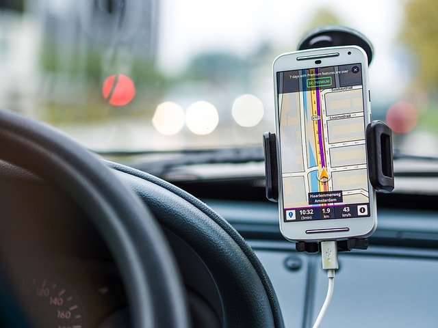

NEWZ
Principal
Fuentes
Hashtags
Galería
Novedades
Contacto
Nosotros
Llegó NEWZ: la mejor manera de informarse
Enterate rápidamente lo que está ocurriendo accediendo de manera directa a sus fuentes y etiquetas.
@android
@infobae
@autoaldia

Android Auto ofrecerá más seguridad a los conductores
Los usuarios ahora dispondrán de mejores funciones para hacer sus viajes más fáciles y menos peligrosos.
#android
#navapp
#seguridad
@twitter
@mundosub
@infobae
Twitter añadirá subtítulos automáticos a los videos
La red social de los ciento cuarenta caracteres creó un equipo especializado en accesibilidad para crear funciones diferentes.
#accesibilidad
#twitter
#subtitulos
@iphone
@dexterok
@tecnomix
Los 8 errores comunes que degradan la batería de su iPhone
Van desde cerrar aplicaciones en la multitarea, hasta cumplir ciclos de carga innecesariamente.
#iphone
#apple
#tips